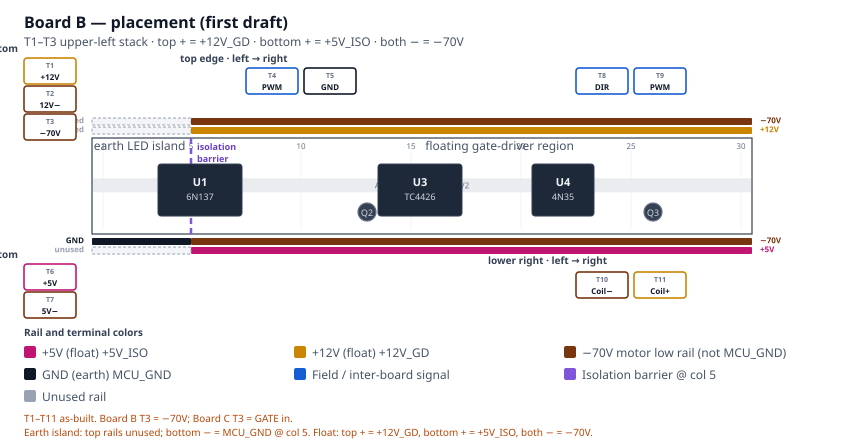
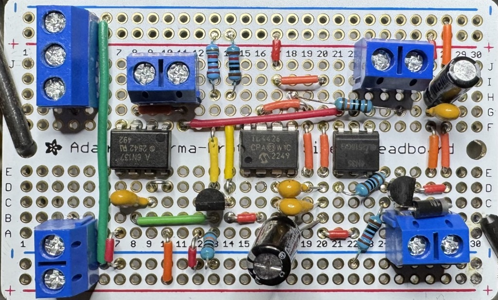
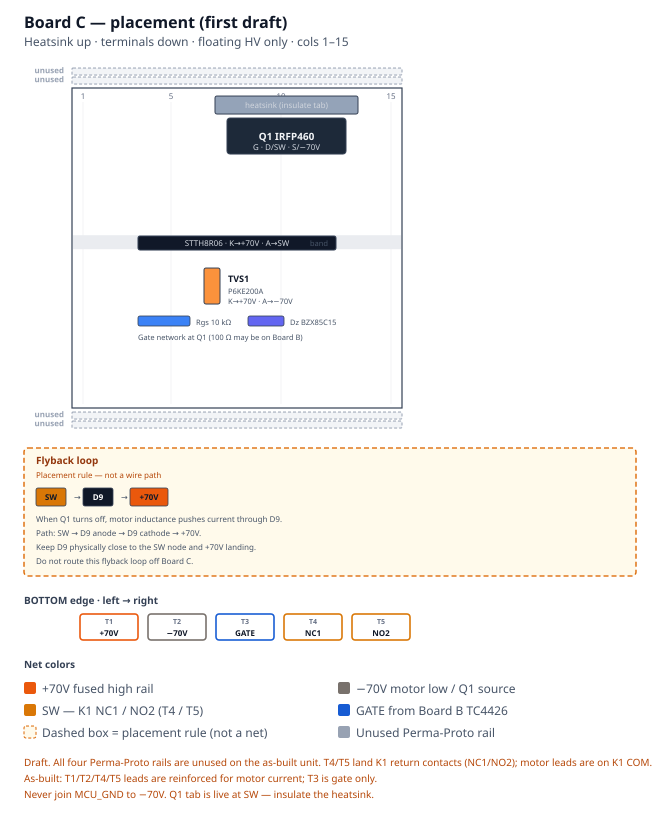
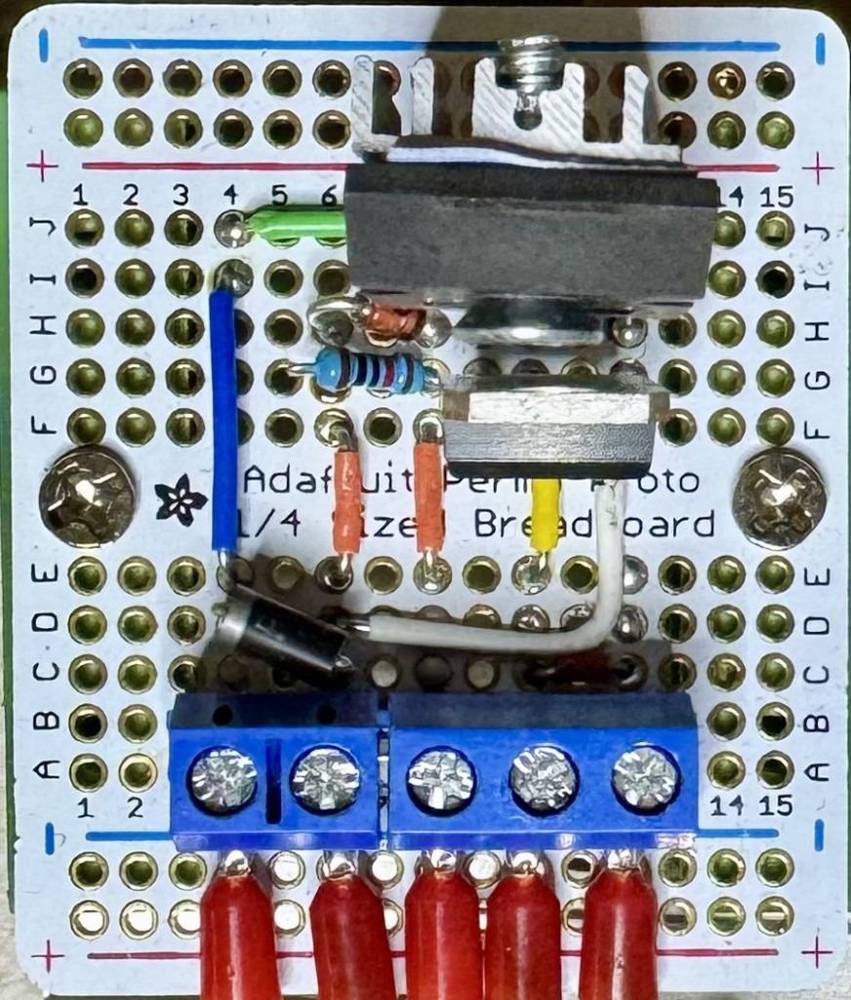

Private Reserve · DIN controller
Wiring Guide
Boards A, B, and C as built: earth-side control, floating gate driver, and HV switch stage.
Screw-terminal IDs on these pages are the names used on the operator screens.
- Board A — Earth-side control
- Board B — Floating gate driver
- Board C — HV switch stage
Private Reserve · DIN controller · first draft
Board A — Earth-side control
Dual Adafruit Perma-Proto 1/2 carrier for the LilyGo T-Display-S3 and the EC11 menu encoder. Field I/O and power leave through edge screw terminals. This board is earth-referenced only.
+5V_ISO, +12V_GD, −70V,
+70V, or SW on Board A.
MCU_GND is not −70V.
1. Placement
View with the display facing you. USB-C is on the left. The EC11 is on the right. Pin 12 of each header is nearest USB. Screw terminals are numbered T1–T12 on the top edge and T13–T24 on the bottom edge, left to right. The top edge starts at T1 (3V, GND, one NC, then PWM, DIR, limits, I²C). The bottom edge starts at T13 (5V, GND, five NC including T17–T19, then OPEN, LIM-L, ISENSE, HALL, 3V). The EC11 uses GPIO11–13 on the T-Display header directly; see EC11 on-board wiring.

2. Rails
Each half has four full-width buses. On the as-built unit both upper outer rails are unused, and the lower outer + rail is unused. The lower outer − rail is MCU_GND. Inner-rail nets below are still proposed. +5V_EARTH lands on the 5V screw terminal and the T-Display 5V pin; it is not on a proto + bus. Sensors / EC11 + should see +3V3_TDISPLAY from the module 3V pin. Do not back-feed 3.3 V into the module.
| Rail | Net | Diagram color |
|---|---|---|
| Upper outer − | unused (as-built; no jumper) | unused |
| Upper outer + | unused (as-built; no jumper) | unused |
| Upper inner + | +3V3_TDISPLAY (proposed) | +3.3V (earth) |
| Upper inner − | MCU_GND (proposed) | GND (earth) |
| Lower inner − | MCU_GND (proposed) | GND (earth) |
| Lower inner + | +3V3_TDISPLAY (proposed) | +3.3V (earth) |
| Lower outer + | unused (as-built; no jumper) | unused |
| Lower outer − | MCU_GND (as-built) | GND (earth) |
3. What attaches
Power
Board A runs from the earth-side Mean Well HDR-15-5 #1 supply
(+5V_EARTH / MCU_GND). Land the PSU positive on
T13 (5V) and the PSU negative on
T14 (GND). Those terminals feed the T-Display
5V pin and the board MCU_GND reference. USB-C
on the module remains for bench programming. Do not back-feed 3.3 V into the
module 3V pin.
Screw terminals
Numbering follows Figure 1: left to right with the display facing you and USB-C on the left. T1 and T13 are nearest USB.
Top edge — T1–T12
| Terminal | Label | GPIO / net | Attaches |
|---|---|---|---|
| T1 | 3V | +3V3_TDISPLAY | SS49E VCC, AS5600 VCC (from module 3V) |
| T2 | GND | MCU_GND | Sensor, limit, and rocker returns |
| T3 | GND | MCU_GND | Sensor, limit, and rocker returns. Lands R6 (PWM) and R7 (DIR) 10 kΩ pull-downs |
| T4 | NC | — | Module NC. Unassigned. May be jumpered to MCU_GND. |
| T5 | PWM | GPIO16 | Board B 6N137 LED. On-board R6 10 kΩ to T3 MCU_GND |
| T6 | DIR | GPIO21 | Board B U4 LED. On-board R7 10 kΩ to T3 MCU_GND |
| T7 | LIM-U | GPIO17 | Upper NC limit to GND |
| T8 | CLOSE | GPIO18 | Close rocker (active-low, paralleled pair) |
| T9 | SCL | GPIO44 | AS5600 SCL |
| T10 | SDA | GPIO43 | AS5600 SDA |
| T11 | GND | MCU_GND | Sensor, limit, and rocker returns; Board B LED return |
| T12 | GND | MCU_GND | Sensor, limit, and rocker returns |
Bottom edge — T13–T24
| Terminal | Label | GPIO / net | Attaches |
|---|---|---|---|
| T13 | 5V | +5V_EARTH | Power in. Mean Well HDR-15-5 #1 (+) → T-Display 5V |
| T14 | GND | MCU_GND | Power in. Mean Well HDR-15-5 #1 (−) / earth-side return |
| T15 | NC | — | Module NC. Unassigned. |
| T16 | NC | — | Module NC. Unassigned. |
| T17 | NC | — | Unassigned. Same index as GPIO13; EC11 SW is on-board from the header (EC11 wiring). |
| T18 | NC | — | Unassigned. Same index as GPIO12; EC11 DT is on-board from the header. |
| T19 | NC | — | Unassigned. Same index as GPIO11; EC11 CLK is on-board from the header. |
| T20 | OPEN | GPIO10 | Open rocker (active-low, paralleled pair) |
| T21 | LIM-L | GPIO3 | Lower NC limit to GND |
| T22 | ISENSE | GPIO2 | ACS712-05B OUT after 10 kΩ/20 kΩ (≤ 3.3 V) |
| T23 | HALL | GPIO1 | SS49E OUT |
| T24 | 3V | +3V3_TDISPLAY | SS49E VCC, AS5600 VCC (from module 3V) |
EC11 (on-board)
The menu encoder wires directly to T-Display-S3 header pins. It does not use screw terminals. Terminals T17–T19 are NC on the as-built unit.
| EC11 breakout | T-Display pin | GPIO / net |
|---|---|---|
| CLK | LEFT GPIO11 | GPIO11 |
| DT | LEFT GPIO12 | GPIO12 |
| SW | LEFT GPIO13 | GPIO13 |
+ | 3V | +3V3_TDISPLAY |
| GND | GND | MCU_GND |
Full notes, terminal clarification, and links: EC11 on-board wiring.
On-board pull-downs
R6 (10 kΩ) sits between T5
(PWM, GPIO16) and T3 (MCU_GND).
R7 (10 kΩ) sits between T6
(DIR, GPIO21) and the same T3 return. They hold the Board B
optocoupler LEDs off if the T-Display is unpowered or resetting. Series LED
resistors stay on Board B.
Board A → Board B
Keyed 3-pin earth-side cable from T5 (PWM),
T6 (DIR), and a MCU_GND terminal
(for example T11 or T14). LED resistors stay
on Board B.
4. As-built photo
Line art is the labeled figure. The photo shows the unit that was built.

Private Reserve · DIN controller · first draft
Board B — Floating gate driver
Single Adafruit Perma-Proto 1/2 carrier for the 6N137 / 4N35 optocouplers, Q2 fail-off, TC4426 gate driver, and Q3 K1 coil switch. Earth-side LED inputs occupy columns 1–5; the floating gate-driver region occupies columns 6–30. Floating power and inter-board links leave through screw terminals on the board edges.
PWM, DIR, and MCU_GND from
Board A (T-Display-S3 GPIO16 / GPIO21 and earth return). Those nets are
earth-referenced only. Columns 6–30 are floating, referenced to
−70V. U1 and U4 translate the command signals optically; no
copper joins the domains. Never tie MCU_GND to
−70V. After HDR-15-5 #2 and HDR-15-12 negatives bond to
−70V, treat both floating supplies as hazardous relative to
earth. Do not clip an earth-referenced scope ground to −70V,
the gate node, or SW.
1. Placement
View the board from above with U1 on the left and U4 on the right, as in
the as-built photo. U3 (TC4426) sits in the center gutter; Q2 is beside U3;
Q3 is beside U4. The isolation barrier falls at approximately column 5: a
physical break in the proto buses separates the earth LED island from the
floating region. The upper-left corner holds a vertical 3-position block
(T1–T3). The earth-side Board A cable lands on
T4 (PWM) and T5
(MCU_GND). The lower-left stack (T6–T7)
carries HDR-15-5 #2. The upper-right block (T8–T9) takes
DIR from Board A and drives PWM out to Board C. The
lower-right block (T10–T11) wires the Phoenix K1 coil.

2. Rails
Each Perma-Proto 1/2 has four full-width buses (top −, top +, bottom −,
bottom +). A single bus cannot carry two domains; the isolation barrier at
column 5 keeps earth-side copper out of the floating region. On the
as-built unit, the bottom − rail on the earth island
(column 5) lands MCU_GND. In the floating region, both
− rails are −70V, the top +
rail is +12V_GD, and the bottom + rail is
+5V_ISO.
| Rail (U1 left, U4 right) | Earth island (cols 1–5) | Floating region (cols 6–30) | Diagram color |
|---|---|---|---|
| Top − | unused | −70V (as-built) | −70V |
| Top + | unused | +12V_GD (as-built) | +12V_GD |
| Bottom − | MCU_GND (as-built @ col 5) | −70V (as-built) | −70V / GND |
| Bottom + | unused | +5V_ISO (as-built) | +5V_ISO |
3. What attaches
Power
Board B draws from two floating DIN supplies whose negatives are bonded
only to −70V. The command cable from Board A carries no
floating power — only earth-referenced GPIO and MCU_GND.
Land Mean Well HDR-15-12 on the upper-left stack:
positive on T1 (+12V_GD) and negative on
T2 (12 V supply return — bonded to
−70V, not MCU_GND). That feed drives the top
+ rail (U3 VDD, Q2 bias, K1 coil branch).
Land Mean Well HDR-15-5 #2 on the lower-left stack:
positive on T6 (+5V_ISO, top screw) and
negative on T7 (bottom screw — floating return bonded to
−70V, not MCU_GND) → bottom +
rail → U1 VCC and VE. Do not connect either floating supply negative to
MCU_GND or protective earth.
T3 (Board B) is the −70V landing for the short
harness to Board C (Q1 source / U3 GND return). Do not confuse it with
Board C T3, which receives PWM from Board B
T9.
Screw terminals
Numbering follows Figure 1. Vertical stacks are top → bottom; horizontal screws are left → right on that edge.
Upper left — T1–T3 (top → bottom, as-built)
| Terminal | Label | Net | Attaches |
|---|---|---|---|
| T1 | +12V | +12V_GD |
Power in. Mean Well HDR-15-12 (+) → top + rail |
| T2 | 12V− | −70V |
Power in. Mean Well HDR-15-12 (−). Floating supply return bonded to −70V. This is not MCU_GND. |
| T3 | −70V | −70V |
Board B → Board C shared motor low rail (Q1 source / U3 pin 3). Keep this link short. |
Top edge — T4–T5 (left → right, as-built)
| Terminal | Label | Net | Attaches |
|---|---|---|---|
| T4 | PWM | PWM (GPIO16) |
Board A T5 ← T-Display-S3 GPIO16. Earth island only → U1 LED through 220 Ω on-board. Optically isolated to the floating domain. |
| T5 | GND | MCU_GND |
Board A T12 ← T-Display earth return. U1 / U4 LED cathodes. Never tie to −70V or floating supplies. |
Lower left — T6–T7 (top → bottom, as-built)
| Terminal | Label | Net | Attaches |
|---|---|---|---|
| T6 | +5V | +5V_ISO |
Power in. Mean Well HDR-15-5 #2 (+) → bottom + rail → U1 VCC / VE |
| T7 | 5V− | −70V |
Power in. Mean Well HDR-15-5 #2 (−). Floating supply return bonded to −70V. Not MCU_GND. |
Upper right — T8–T9 (left → right, as-built)
| Terminal | Label | Net | Attaches |
|---|---|---|---|
| T8 | DIR | DIR (GPIO21) |
Board A T6 ← T-Display-S3 GPIO21. Earth island → U4 LED (270 Ω on-board). LED return shares T5 MCU_GND — no separate earth screw for DIR. Optically isolated to Q3 / K1 coil. |
| T9 | PWM out | PWM / gate |
TC4426 OUT B through 100 Ω (on-board) → Board C T3. Floating domain. Return via Board B T3 −70V. Keep harness short. |
Lower right — T10–T11 (left → right, as-built)
| Terminal | Label | Net | Attaches |
|---|---|---|---|
| T10 | Coil− | K1 coil (−) / Q3 drain | Phoenix PLC-RSC-12DC/21-21 coil (−) via field wire. Low side switched by Q3 to −70V on-board. |
| T11 | Coil+ | +12V_GD |
Phoenix K1 coil (+) from +12V_GD rail (HDR-15-12 / top + bus). D5 flyback (1N4007) is installed across these terminals on the as-built unit; cathode/band toward T11. |
K1 coil (on-board driver, DIN relay)
Q3 switches the Phoenix K1 coil low-side on the floating domain. Field wires to the DIN relay coil land on T10 (Coil−) and T11 (Coil+). Do not route coil current through the Board B → Board C PWM link (T9).
| Signal | Net | Attaches |
|---|---|---|
| K1 coil + | +12V_GD | T11 → Phoenix PLC-RSC-12DC/21-21 coil (+) |
| K1 coil − | Q3 drain | T10 ← relay coil (−); Q3 source → −70V |
| PWM command | PWM | T-Display-S3 GPIO16 → Board A T5 → Board B T4 → U1 LED (220 Ω on-board); optically isolated to Q2 / U3 / gate |
| Direction command | DIR | T-Display-S3 GPIO21 → Board A T6 → Board B T8 → U4 LED; return via T5 MCU_GND |
Coil and contact detail: K1 floating coil option.
On-board only (not on screw terminals)
These subsystems stay on the Perma-Proto and are wired per Motor_Driver_Wiring.md:
- U1 6N137 — PWM isolation; pin 6 → Q2 base
- Q2 PN2222A — fail-off inverter (Rb2, Rbe2, Rc2 on-board)
- U3 TC4426 — dual inverting gate driver; OUT B → 100 Ω → Board C gate path
- U4 4N35 + Q3 2N7000TA — direction opto and coil low-side switch
- 220 Ω (U1 LED) and 270 Ω (U4 LED) beside the optocouplers
- U3 decoupling: 100 nF, 1 µF across pins 6–3; 47 µF bulk nearby
Inter-board cables
| Cable | Board B landing | Domain |
|---|---|---|
| Board A → Board B | T4 (PWM in), T5 (MCU_GND), T8 (DIR) | Earth only; translated optically by U1 / U4 |
| Board B → Board C | T3 (−70V) + T9 (PWM out → Board C T3) | Floating; keep short |
| Board B → DIN K1 coil | T10 (Coil−), T11 (Coil+ / +12V_GD) | Floating |
4. As-built photo
Line art is the labeled figure. The photo shows the unit that was built.

Private Reserve · DIN controller · first draft
Board C — HV switch stage
Adafruit Perma-Proto 1/4 (columns 1–15) carrying Q1
IRFP460, D9 STTH8R06 flyback, TVS1 P6KE200A, and the local
SW / flyback loop. All copper is in the floating HV domain
referenced to −70V. Screw terminals
T4 and T5 wire to the DIN K1 return
contacts; motor leads land on K1 COM, not on this board.
−70V is not MCU_GND. Do not
bond this board to protective earth except through an analyzed heatsink
isolator. Q1 tab and drain are live at SW. Use an isolated
or differential probe referenced to −70V, not earth ground.
Discharge the bus and verify safe voltage before service.
1. Placement
Mount on DIN rail with ≥20 mm clearance beside the heatsink for airflow
(see DIN layout). Q1 sits under an
insulated heatsink at the top of the proto. D9 spans the mid board with
cathode toward the fused +70V side and anode to
SW. TVS1 clamps between the on-board
+70V and −70V nodes (via column wiring, not
the Perma-Proto rails). Five screw terminals on the bottom edge accept
field and inter-board cables; there are no terminals on the top edge.
Flyback loop constraint. When Q1 turns off, motor
inductance pushes current through D9 from SW to
+70V. That path — SW → D9 anode → D9 cathode
→ +70V — must stay physically short and entirely on Board C.
Figure 1 shows this as a dashed callout box below the proto; it is a
placement rule, not a specific jumper wire to install. Do not
run the flyback loop through a long cable to Board B or the DIN rail.

SW net on-board. The full-width dashed amber
box below the proto is a placement constraint for the flyback path —
not a wire diagram.
2. Rails
The 1/4 Perma-Proto has four full-width buses (15 columns). On the
as-built unit all four rails are unused — no jumpers
connect them to +70V, −70V, or any other net.
HV distribution uses column strips and point-to-point jumpers instead.
Do not land MCU_GND, +5V_EARTH,
+5V_ISO, or +12V_GD on any Board C bus.
| Rail | Net | Diagram color |
|---|---|---|
| Upper outer − | unused (as-built; no jumper) | unused |
| Upper inner + | unused (as-built; no jumper) | unused |
| Lower inner − | unused (as-built; no jumper) | unused |
| Lower outer + | unused (as-built; no jumper) | unused |
3. What attaches
Power
Board C receives the motor outer rails from the inter-box 140 V feed
and Wago distribution (see DIN layout,
row B). AnTek +70V is interlocked in the PSU box
(AC-in and DC-out relays, coils on +12V_GD) before that feed
reaches F1, the Wago star, K1, and T1. Run those coil
leads in the AC inter-box passage, not beside the ±70 V
PWM pair. Details:
DIN enclosure — 140 V interlock relays.
The fused +70V high rail enters at
T1 after that interlock and F1. The low outer rail
−70V enters at T2. Those terminals feed
D9 cathode, TVS1, and Q1 source on-board. K1 high-side contacts
(NO1/NC2) take fused +70V from the Wago star, not through
a second Board C terminal, unless your harness branches from T1.
Screw terminals
Numbering follows Figure 1: left to right with the heatsink up and terminals down. T1 is leftmost (column 3 on the as-built unit). On the as-built board, leads at the motor-current terminals (T1, T2, T4, T5) are reinforced for the higher continuous and PWM motor current. Use heavy-gauge, HV-rated wire on those paths; keep T3 (gate) as a low-current signal lead. See DIN layout for 140 V path gauge guidance (18 AWG minimum; 16 AWG preferred for runs >1 m).
Bottom edge — T1–T5
| Terminal | Label | Net | Attaches |
|---|---|---|---|
| T1 | +70V | +70V | Power in. After PSU-box DC interlock, then F1 / Wago → D9 K, TVS1 K (board-internal) |
| T2 | −70V | −70V | Power in. Motor low outer rail → Q1 source, TVS1 A, Rgs/Dz return (board-internal) |
| T3 | GATE | gate | Board B TC4426 OUT B (100 Ω may be on B or at Q1; see Motor_Driver_Wiring.md) |
| T4 | NC1 | SW | K1 pin 12 (NC1) — return contact → Q1 drain / D9 anode on-board |
| T5 | NO2 | SW | K1 pin 24 (NO2) — return contact → same SW node as T4 on-board |
On-board only (not on terminals)
| Ref | Part | Notes |
|---|---|---|
| Q1 | IRFP460NPBF | Low-side switch; tab = drain = SW |
| D9 | STTH8R06D | Motor PWM flyback; cathode → +70V, anode → SW |
| TVS1 | P6KE200A | Across +70V and −70V on-board (column wiring; rails unused) |
| Rgs | 10 kΩ | Gate-to-source at Q1 |
| Dz | BZX85C15 | 15 V gate clamp at Q1 |
Full pin tables: Motor_Driver_Wiring.md.
Board B → Board C
Keyed two-conductor floating cable from Board B
T9 (PWM out / gate) and T3
(−70V gate-driver return / Q1 source reference) to Board C
T3 (GATE) and T2 (−70V).
Keep this harness short; do not route the D9 flyback loop off Board C.
Board C → DIN K1 (contacts)
Direction switching uses the Phoenix K1 DPDT on the DIN rail. Board C lands the return-contact harness; high-side contacts and motor commons wire at the relay.
| K1 pin | Net | From |
|---|---|---|
| NO1, NC2 | +70V (fused) | Wago / F1 star (not a Board C terminal unless branched from T1) |
| NC1 (12) | SW | T4 |
| NO2 (24) | SW | T5 |
| COM1, COM2 | MOTOR_A, MOTOR_B | Field motor harness (HV gland) |
K1 coil (+12V_GD / Q3) is driven from Board B; see
K1 floating coil option.
4. As-built photo
Line art is the labeled figure. The photo shows the unit that was built.
